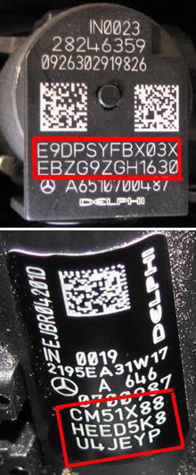

This function is used to program new injector codes to the control unit after injector replacement. The injector code is printed on the injector's main part. The code consists of 20-24 characters.
Test conditions:
Ignition on, engine off.
Battery voltage above 12 V.
Procedure:
Start the function.
A dialogue box shows the programmed injector codes, press "OK".
Select the injector to be programmed in the shown dialogue box, confirm with "OK".
If the injector code is correct, you can exit the function.
Enter the new injector code in the dialogue box, confirm with "OK" to finish programming. Note that capitals should be used.
Valid characters that may be used:
0 1 2 3 4 5 6 7 8 9
A B C D E F G H J K L M N P R S T U W X Y Z
A dialogue box shows if the programming was successful or failed.
If the function fails, check the test conditions and repair any faults.
